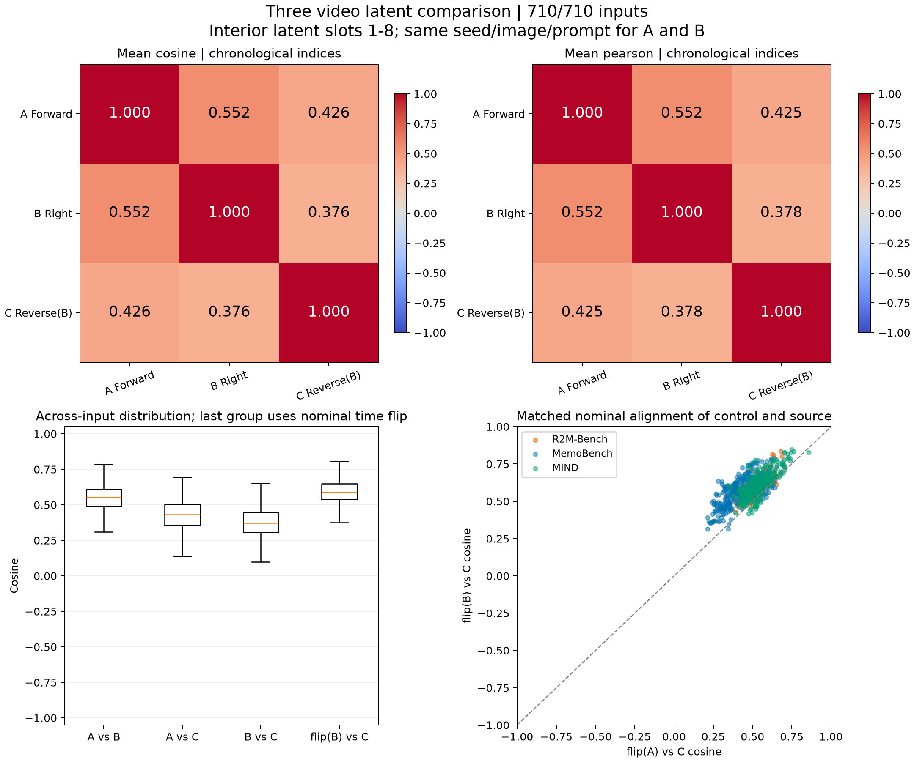

A、B 共用首图、原始 prompt 和随机数。C 是 B 的浮点 RGB 逐帧倒放，首帧位于 B 的末端。三组均经同一冻结 VAE 独立编码。图中使用去掉首尾后的 8 个 latent；所有 region 的 cosine、Pearson、MSE 在 CSV/JSON 中保留。
原始单视频 24fps，三列预览为 8fps 慢放。latent flip 只是索引对齐；因果历史及四帧分组不同。这里不把低相关性解释为信息不可恢复，也不把合计结果称为官方 benchmark 分数。
汇总 JSON · 逐例全部指标 CSV · 实验定义
视频为网页播放副本；数值来自原始浮点 RGB 与 latent。原始张量保存在实验档案中。
